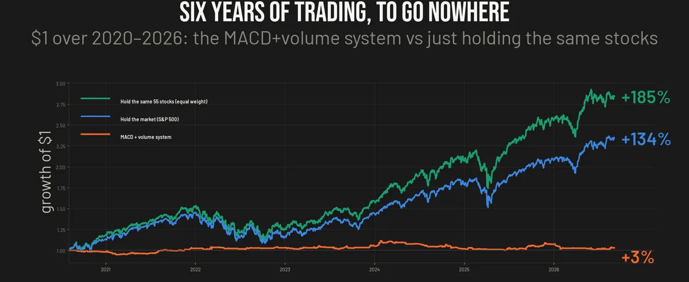
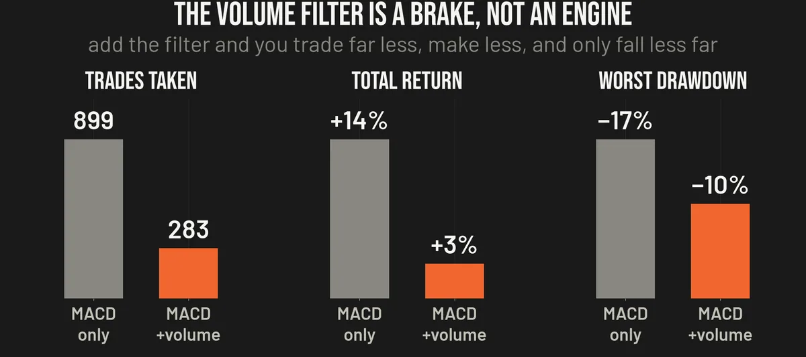

Does a MACD Volume Filter Work? 6 Years Tested
The MACD (12/26/9) crossover with a volume filter (RVOL of 1.5 or more) was tested on 55 liquid US large caps from 2020-08 to 2026-09. It returned +3.0% against +134.3% for buy-and-hold SPY, with a MAR of 0.05 and Sortino of 0.12. The volume 'multiplier' took profit factor from 1.07 to 1.05 and cut trades from 899 to 283; its one real effect was a smaller drawdown (-17% to -10%). The top 5 names made +$15,489 while the other 49 lost -$12,482 combined, and at 2x cost the system went net-negative (-1.1%). It works as a throttle on exposure, not a source of return.


The receipts
The code and result files behind every number on this page.
Browse the receipts for this episodeGet the next autopsy by email. The full receipts notebook, and the next test before it airs. Unsubscribe any time. Not financial advice.
Related autopsies
- Does Buying the Dip Work? 5 Years Against Doing NothingVerdict: BEATEN BY DOING NOTHING.
- Does the RSI 2 Strategy Work? A 67% Win Rate, TestedVerdict: NOT AN EDGE.
- Does the Gap and Go Strategy Work? 537 Trades TestedVerdict: DEAD.